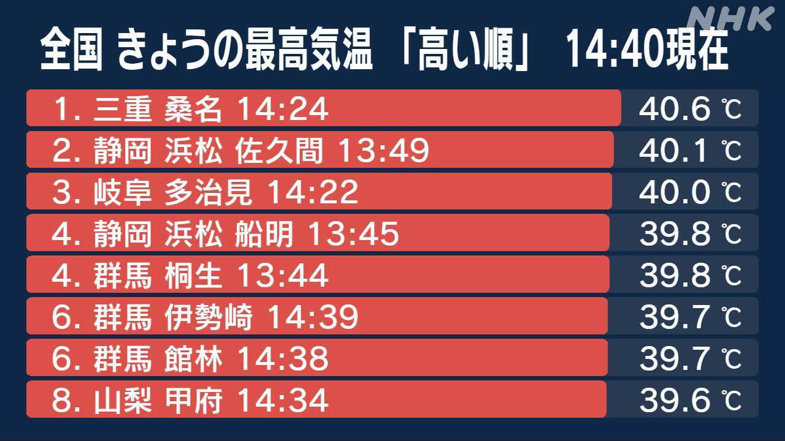
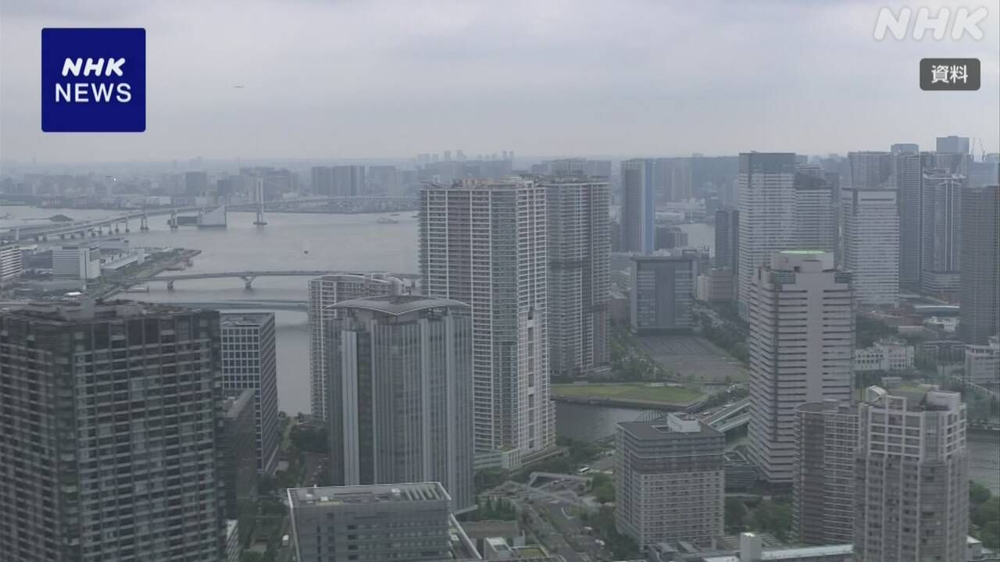
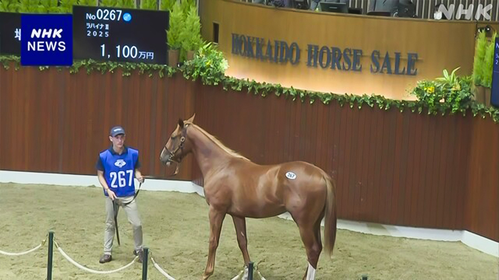

最新ニュース
1️⃣ 危険な暑さが続く 急な雨にも気をつけて

22日もとても暑くなりました。
三重県、静岡県、岐阜県で、40℃以上の「酷暑日」になったところがありました。とても危険な暑さです。
東京も38℃以上になったところがありました。
熱中症で病院に運ばれる人が増えています。エアコンを使って、水や塩分をよくとってください。
気象庁によると、東北地方から近畿地方まで、天気が変わりやすくなっています。急に強い雨が降りそうです。
関東地方の北のほうでは、先週に続いてまた雨がたくさん降る心配があります。
低いところに水が入ったり川の水が増えたりするかもしれません。気をつけてください。
2️⃣ 東京やその近くの新しいマンション 1億円以上になっている

東京やその近くで、新しいマンションの値段が高くなっています。
調査した会社によると、今年1月から6月までに東京、神奈川県、埼玉県、千葉県で売れた新しいマンションの値段は、平均で1億円より高くなりました。前の年より13％上がりました。
東京23区のマンションは1億4200万円ぐらいでした。千葉県は9000万円ぐらい、神奈川県は8300万円ぐらいでした。
値段は高くなりましたが、売れたマンションの部屋の数は前の年より少し少なくなりました。
調べた会社は「値段が高くなって、買う人が考えるようになっています。しかし値段はこれからも上がりそうです」と話しています。
3️⃣ フランス 子どもがSNSを使えないようにする
子どものSNSの使い方が、いろいろな国で問題になっています。
フランスでは、15歳になる前の子どもはSNSを使ってはいけないという法律ができました。
子どもは、今年9月からSNSを新しく始めることができなくなります。今使っているSNSも、来年1月から使うことができなくなります。
マクロン大統領は「フランスはSNSから子どもや若い人たちを守ります」と言いました。
このような法律は、オーストラリアがつくっています。EUも子どものSNSの使い方を今年の秋ぐらいまでに決めたいと考えています。
4️⃣ 北海道新ひだか町 馬の値段を決める会があった

北海道の新ひだか町は、レースに出る馬をたくさん育てている町です。
21日、1歳の馬の値段を決める会がありました。300頭ぐらいが会に出ました。
馬を買う人たちは、最初に馬の体や歩き方などをよく見ました。
そのあと、買いたいと思う値段を伝えて、いちばん高い値段を伝えた人が馬を買いました。
会を開いた人は、「これからも毎年、いい馬を出していきたいです」と話しました。
- 〜ても / 〜でも
- 〜ところ
- 〜以上
- 〜になる
- 〜がある / 〜がいる
- 〜ている / 〜でいる
- 〜てください / 〜でください
- 〜から
- 〜によると
- 〜まで
- 〜やすい
- 〜から〜まで
- 〜そうだ
- 〜方
- 〜かもしれない / 〜かもしれません
- 〜たり〜たりする
- 〜より
- 〜までに
- 〜くらい / 〜ぐらい
- 〜ように
- 〜ようになる
- 〜いけない
- 〜という
- 〜ことができる
- 〜こと
- 〜ような
- 〜や〜など
- 〜など
- 〜と思う
- 〜後 / 〜あと
vebaev.github.io
Generated: 2026-07-22 11:48:21 UTC